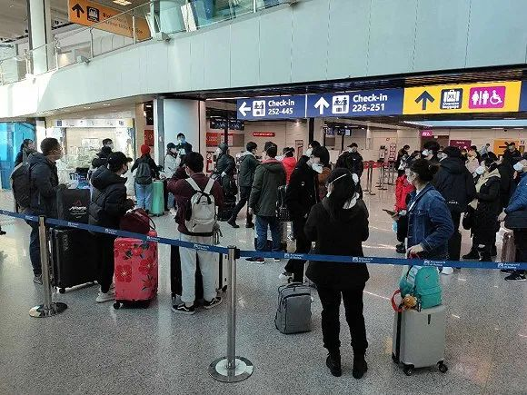
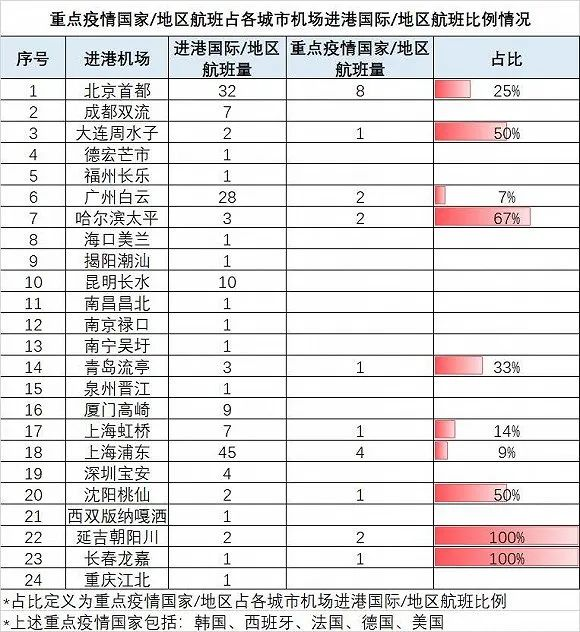

从英国抢票回国有多难？
原文链接 备份链接 欧洲疫情不断扩散，英国确诊病例迅速增加，由于部分航班取消，在英留学生想马上回国并不容易 文丨《财经》记者 陈亮 王静仪 编辑丨施智梁 英国疫情蔓延近日明显加速。截至3月15日，英国新冠肺炎确诊病例数已达1372例，与前 …

记者：陈晓双
“
金鹿航空推出了3月18日伦敦-日内瓦-上海航线的787公务机行程，共40个座位，单个座位售价18万元起，迅速卖光。
”
随着境外疫情不断升级，越来越多的华人择返回国内。但由于各地管控措施升级和很多国际航班暂停等限制，很多人面临回国难的困境。
意大利当地时间3月14日15时，计划乘坐俄罗斯航空经莫斯科中转回国的欧阳女士做好防护来到罗马机场，顺利办理登机牌和出关手续，但在登机之前被告知非俄罗斯籍不能登机，“俄航工作人员已经直接把我的登机牌撕掉一半了。”和她同航班面临同样境遇的还有约50位华人。与俄航交涉无果后，欧阳女士迅速重新订埃塞俄比亚航空经亚的斯亚巴斯转机回国的航班。但“埃航目前已经满了，没买到票的人只能回家，没有航班了。”

罗马机场 图片来源：欧阳
欧阳称，她出发前致电俄航官方客服确定她的联程机票可以顺利乘坐航班，但没想到机场出关后，遇到政策突变被拒绝登机。经核实，目前俄航在罗马机场的最新政策是，只允许欧亚经济联盟五个国家的公民（俄罗斯、白俄罗斯、哈萨克斯坦、吉尔吉斯斯坦、亚美尼亚）乘坐俄罗斯航空返回莫斯科。
仅隔了一天之前，一名在意大利工作的房女士，庆幸搭上了俄航政策出台前同一航班顺利回国，此前也因阿联酋、土耳其航空陆续意大利航线调整而改签过。中转航班22个小时，她全程穿着防护服，为了最大程度降低病毒感染风险，她没有摘下口罩用餐、滴水未进。
在像“欧洲党回国群”这样的微信群里，不断有人分享回国经验和更新航班机场限制措施。从西班牙、德国、法国回程的留学生们密切关注航班和政策动向，担心转机被拒、航班被临时取消。
群里的热心人士不断更新注意事项，“目前台北新加坡不可转机。从3月16日起，莫斯科与巴塞罗那、布尔加斯、法兰克福、伊拉克利翁、慕尼黑、塞萨洛尼基和苏黎世之间的航班将暂停。过安检需要摘下口罩防护服。”
此外，还有很多“回国群”变成了机票代理售卖群，一张荷兰转机回国的航班公务舱机票被买到了近5万元一张。
北京时间3月15日13：07，一架国航波音747-400客机从首都机场起飞，执行北京—米兰—温州—北京包机任务。这架飞机的两舱布局最大载客量为524人，相对与有回国需求的海外华人而言仍是杯水车薪。
目前，有些海外华人考虑通过各种途径组织包机回国。一位伦敦留学生向界面新闻记者表示，学校学联帮忙联系了国内民航A330客机，从伦敦直飞天津，经济舱票价1400英镑，商务舱3000英镑。留学生家长也成立了包机群，统计回国需求，希望凑够人数包架飞机回国。
利用欧洲华人回国心切，一些不法分子开始用虚假航班信息趁机诈骗牟利。3月13日，吉祥航空发布声明称，目前未接收到任何波士顿回国商业包机合作需求。

国内一家航空公司工作人员对界面新闻表示，”确实收到了许多欧洲留学生家长提出的包机需求，但个人自行包机类型的审批程序很复杂。航空公司目前还是以保障正常航班为主。”
3月4日，民航局宣布对疫情期间不停航和复航的国际航班给予奖励政策，政策执行期限为2020年1月23日至2020年6月30日。奖励标准分成两档：共飞航班每座公里0.0176元，独飞航班每座公里0.0528元。
得益于民航局奖励政策和市场需求，航空公司逐渐恢复了部分国际航线。其中，南航计划逐步恢复广州至澳新、北美、欧洲、东南亚等多个地区的国际客运航班，其中欧洲航线方面，从3月22日起，南航计划将广州至伦敦航线恢复至每周4班，每周1、3、5、7执行。
东航方面从3月15日起恢复了多条国际航线。其中欧洲航线上恢复了浦东—巴黎、浦东—阿姆斯特丹、浦东—法兰克福、浦东—伦敦等航线。
除了传统的民航固定航班和包机航班外，得益于快捷私密等优势，公务机成为华人回国的热门选项。3月14日，金鹿航空推出了3月18日伦敦-日内瓦-上海航线的787公务机行程，共40个座位，单个座位售价18万元起，迅速卖光。
一位公务机从业人员称，“目前公务机包机一天一个价格，机场和出入境政策也在随时改变，旅客需求大增，平台飞机包机业务已经安排到一周以后了。”
一张报价单显示，公务包机回国单座的价格至少在10万以上。3月19日伦敦直飞上海，15万一人；3月22日13座庞巴迪环球快车5000伦敦—上海浦东每座12万。

但随着国内防疫政策不断升级，公务机或将面临入境限制。目前，首都机场方面已宣布，暂停受理国际（含港澳台地区）进港公务机保障任务，恢复时间另行通知。
目前入境国际航班仍然较分散，涉及全国24个机场，面临着较大的管控压力更大。
飞常准数据显示，3月14日国内承接疫区航班的机场数量达到10个，其中首都机场疫区航班量最多，达到8个；上海两机场以5个疫区航班量位居第二。此外，广州白云、哈尔滨太平、延吉朝阳川以日均2个疫区航班量排名第三。

机场作为防止境外疫情输入的关键口岸，目前已经执行了非常严格防疫措施。首都机场方面，全部国际及地区进港航班，均停靠首都机场处置专区。旅客经由海关进行测温等检疫排查，边检办理入境手续，非中转旅客在专属休息区等候摆渡车前往新国展旅客接驳区；中转旅客在办理完中转手续后，再前往专属休息区候机。
上海方面则要求，从3月13日零点起，凡是在进入上海之日前14天内，有过韩国、意大利、伊朗、日本、法国、西班牙、德国、美国等国家旅行或居住史的所有中外人员，一律实施居家或集中隔离健康观察。
在3月15日召开的北京市新型冠状病毒肺炎疫情防控工作新闻发布会上，国航海外疫情防控组成员张允介绍称，3月1日至3月15日滚动统计，国航“境外进京”航班在登机前因体温超标暂不运输旅客76人，涉及23个航班。3月1日至3月15日滚动统计，国航机组执行境外进京航班，飞行途中检测体温超标落地移交检疫67人（涉及44个航班）。
未经授权 禁止转载

原文链接 备份链接 欧洲疫情不断扩散，英国确诊病例迅速增加，由于部分航班取消，在英留学生想马上回国并不容易 文丨《财经》记者 陈亮 王静仪 编辑丨施智梁 英国疫情蔓延近日明显加速。截至3月15日，英国新冠肺炎确诊病例数已达1372例，与前 …
原文链接 备份链接 代号BR272的航班由中国台湾长荣航空营运，由马尼拉飞往中国台北。在几乎所有直飞航班都停飞、几经改签的情况下，这班马尼拉经停中国台北飞上海的航班，仍未让艳子如愿以偿。事实上，比艳子的状况更糟糕的是，马尼拉机场已滞留的近 …
原文链接 备份链接 今天是3月15日，月相为60%的下弦月。 It is March 15 with a 60 percent of Last Quarter. 距离新月还有 9 天。 There are 9 days until New …
原文链接 备份链接 多家航司表示暂未收到复航通知，但东航武汉公司已在开展试飞等准备工作 文/《财经》记者 陈亮 王静仪 编辑/施智梁 3月8日，湖北机场集团有限公司下发通知，要求集团职能部门和各版块公司职能部门3月10日开始正常到岗上 …
原文链接 备份链接 【财新网】（记者 曾凌轲 罗国平）伊朗疫情形势愈发严峻，包机归国华人已确诊11例感染新冠病毒。甘肃省卫健委3月5日披露，3月2日20时至3月5日20时，共有311人乘商业包机由伊朗到达兰州，均已全部隔离。当日，甘肃新 …